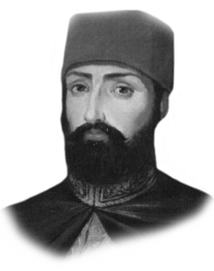

II. MAHMUT
Annesi : Nakşidil Valide Sultan
Doğumu : 20 Temmuz 1785
Vefatı : 30 Haziran 1839
Saltanatı : 1808 - 1839 (31 yıl)
II. Mahmut İstanbul’da doğdu. Diğer padişahlar gibi kuvvetli bir tahsil gördü. Tahta çıktığında yirmi üç yaşında idi. III. Selim’in, öğrenimine bizzat önem vererek yetiştirdiği kıymetli bir şahsiyetti. Hattat, bestekâr ve şairdi. “Adli” mahlasıyla şiirler yazmıştır.
Cesur, temkinli, sabırlı ve azimli bir tabiata sahipti. Dağılan Nizam-ı Cedid askerinin yerine Sekbân-ı Cedid askeri teşkilâtını kurdu. Çok geçmeden asiler ayaklanınca, bu ocağı kendiliğinden dağıttı.
1808’de ayaklanan asiler, Alemdar Mustafa Paşa’yı öldürdüler. 1812’de Ruslarla Bükreş Antlaşması yapıldı. 1813 yılında, Mekke ve Medine’de kutsal yerlere hakaretlerde bulunan Vehhabiler temizlendiler. Osmanlı İmparatorluğu yakılıncaya kadar bir daha huzursuzluk çıkaramayacak hale getirildiler. 1821’de Yunan İhtilâli oldu. Binlerce sivil halk öldürüldü. 1826’da Yunan İhtilâli bastırıldı. Yeniçeri Ocağı, Seyhülislâm’ın fetvası, ulema sınıfı, asker ve halkın ayaklanması ile tamamen ortadan kaldırıldı Bu olaya tarihçiler Vak’a-yı Hayriye diye isim verdiler. 1827’de Rus Savaşı yeniden başladı. 1829’da Edirne Antlaşması yapıldı. 1831 ve 1839’da Mısır isyanları oldu.
1839 yılının temmuz ayında II. Mahmut vefat etti. Hayatı boyunca uğraşmış olduğu üzücü olayların etkisiyle verem olmuş ve bu hastalıktan vefat etmişti. Cenazesi Divanyo-lu’ndaki türbesine defnedildi.
II. Mahmut her sahada çok geniş çalışmalarda bulundu. Birçok yeni mektepler açtı. Büyük binalar inşa ettirdi. İstanbul’daki bütün büyük camilerin tamirini yaptırdı. Unkapanı Köprüsü de onun zamanında yapıldı. Mekke-i Mükerre-me’de bir medrese yaptırdı ve Mescid-i Aksa’yı da tamir ettirdi.
Erkek çocukları: Abdülmecit, Abdülaziz, dört adet Ahmet isimli şehzade, Beyazıt, Abdülhamit, Süleyman, Mehmet, Murat, Nizameddin, Abdullah, Osman.
Kız çocukları: Emine, Hamide, Hayriye, Sali, Saliha, Ayşe, Atike, Fatma, Münire, Fatma, Mihrimah, Adile.